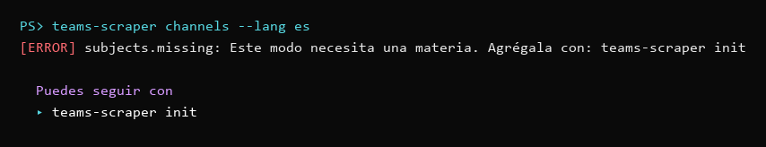

channels
Publicaciones, archivos compartidos, nombres de canal y notas de las clases que marcaste. El alias es canales.
teams-scraper channels -s hist
teams-scraper channels -s hist -p posts,gradesSin al menos una clase en la config, o sin un -s que resuelva, el código es subjects.missing. El nombre de subjects[].name tiene que coincidir con Teams. Si no está en la lista, el código es teams.class_missing.

Partes
Si no pasas -p, lee posts y shared. Puedes pedir varias, separadas por comas.
| Parte | Qué guarda |
|---|---|
posts | Publicaciones del canal. |
shared | Carpetas y archivos compartidos. Los archivos van a descargas/ si las descargas están activas. |
channels | Nombres de canal, incluidos los ocultos que la pantalla llegue a mostrar. |
assignments | Tareas vistas desde la clase. |
grades | El texto de la nota, en calificacion_texto. |
Alias de parte: asignaciones y assigments son assignments. calificaciones es grades. canales es channels. Una parte desconocida es config.invalid.
Puedes repetir -s para más de una clase. El atajo o el nombre tienen que estar en la config.